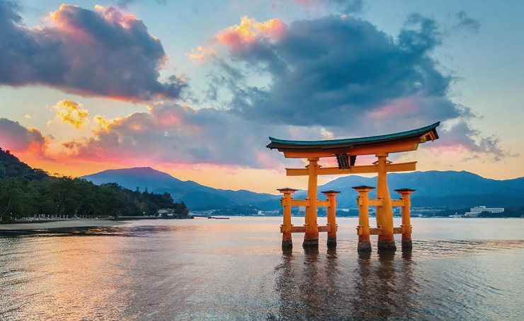

Miyajima

Miyajima es una isla llena de magia y uno de los lugares que ver en Japón más imprescindibles, además de haber sido declarada Patrimonio de la Humanidad por la UNESCO. La isla está situada cerca de Hiroshima y su lugar más destacado y sagrado es el Santuario de Itsukushima, construido parcialmente sobre el mar.
Otro de los monumentos destacados es La Puerta Ootorii, el símbolo de Miyajima, un torii de madera construido en el mar al que cuando baja la marea te puedes acercar hasta su base. Para nosotros fue uno de los sitios más bonitos del viaje y siempre recomendamos pasar una noche en MiyajimaRyoso Kawaguchi y se convirtió en uno de los momentos memorables del viaje.